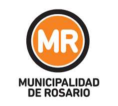

CURRENT STUDIES
Brigham Young University - Idaho (online)
University - Bachelor of Science, Applied Technology
2022 - 2027 (Estimated)
- Configure and resolve issues related to software, network, and security in support of desktop computers.
- Design and develop computer programs.
- Design and develop web pages, sites, and applications.
- Design and develop relational databases and applications.
- Install, configure, and troubleshoot network routers, switches, and servers.
13%
National University of Rosario - University of Biochemical and Pharmaceutical Sciences (FBioyF)
University - Bachelor of Chemistry
2021 - 2025 (Estimated)
- Develop work methodologies to produce, elaborate, analyze and synthesize substances
- Organize, direct and execute chemical laboratory tasks and design the work methodology to be used
- Handle chemical laboratory materials and instruments in accordance with hygiene and safety standards
- Carry out investigations and studies of transfer of scale and feasibility of industrial processes
- Intervene in multidisciplinary teams for the supervision, control, advice and arbitration of activities and/or processes that involve organic and inorganic substances and their derivatives
- Train human resources in different topics of chemistry
- Carry out academic, research, extension and linking functions in the educational field
- Assume a critical reflection about the responsibilities that correspond to it in the preservation of the environment and in the improvement of the quality of life of the population
35%
PAST STUDIES
BYU-Pathway Worldwide - PathwayConnect (online)
Pre-University - BYU-Pathway Worldwide
2021 - 2022
- Life skills
- English
- Algebra
- Personal finance
100%
Instituto Politécnico Superior “General San Martín”
High School - IPS, UNR
2013 - 2018
- Management and calibration of analytical laboratory instruments (Spectrophotometer, analytical and electronic balances, Phmeter, Nephelometer, etc.)
- Knowledge and practice in bromatological and microbiological techniques (autoclaving, sterilization, isolation, sampling, etc.)
- Knowledge and practice in qualitative, quantitative, volumetric and gravimetric analytical techniques
- Management of equipment and techniques for the synthesis of organic compounds (distillation equipment, titration, filtering, chromatography, extraction, etc.)
- Standardization of solutions and samples
- Organization and planning of work in the laboratory
- Knowledge of Hygiene and Safety standards, cleaning of materials and care of chemical substances
- Management of statistical language (basic level), Microsoft Excel, Libre Office, C and C++
100%
Municipal School of Music "Juan Bautista Massa"
Music - Violin and Musical Language
2003 - 2021
- Orchestra soloist
- 8 years of orchestra experience
- 8 yeart of musical theory and musical language
- 5 years of Traditional Method (violin) with Leandro Curaba
- 11 years of Suzuki Method (violin)
- Teaching music experience
- Self-formed musical groups
- Experience in composing and musical arrangements
100%
